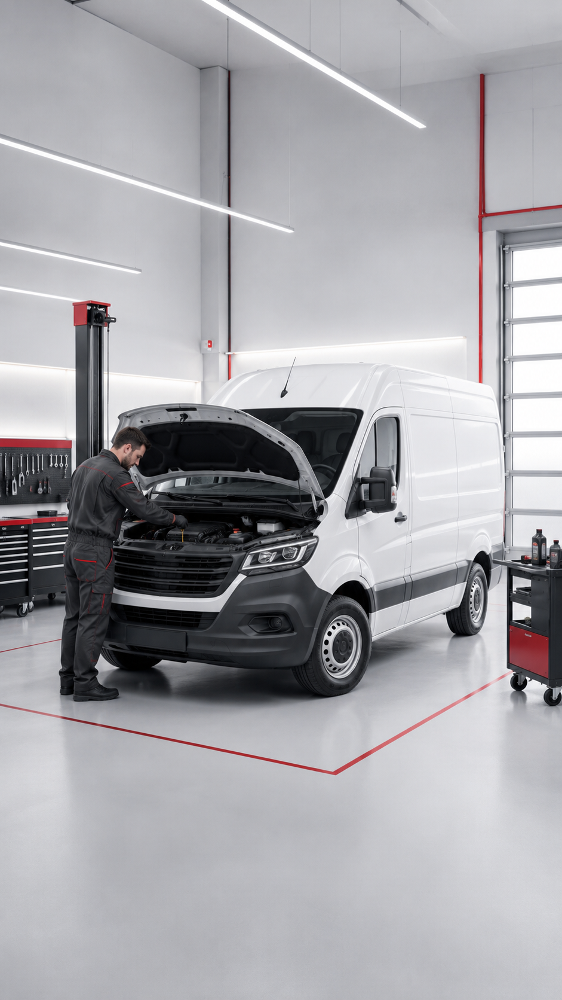
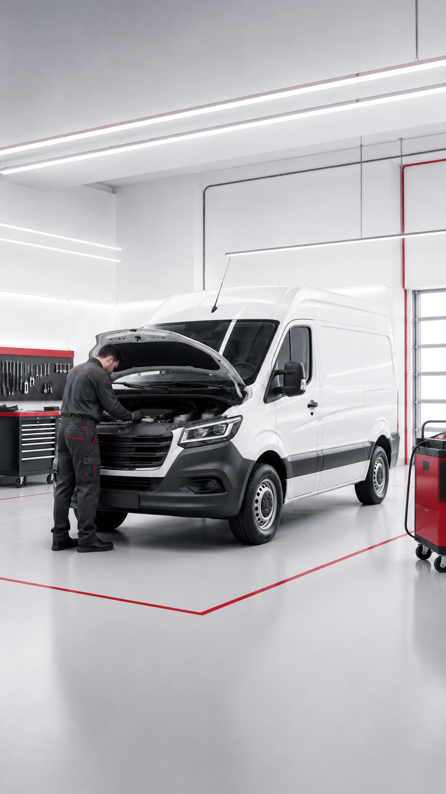
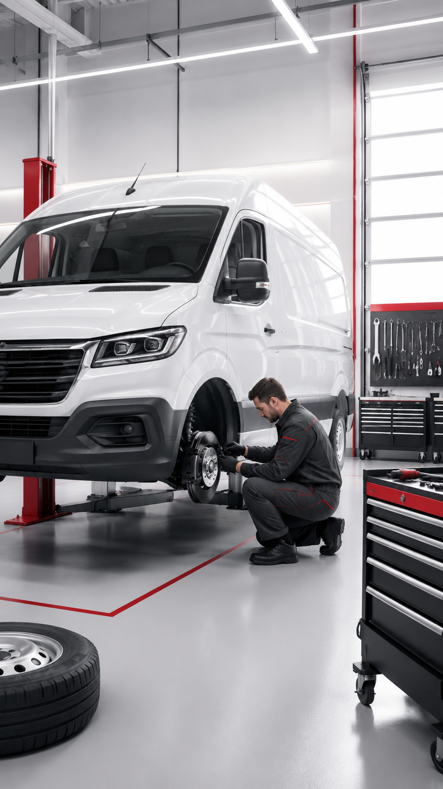
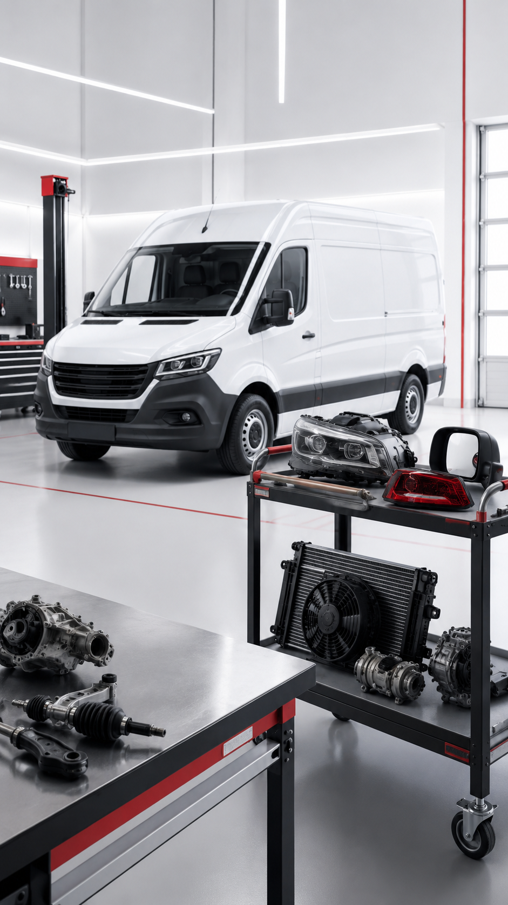
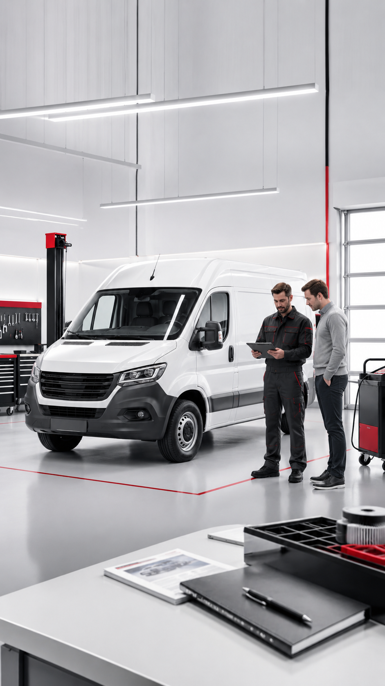

Южный
- Адрес
- метро Пражская, г. Москва, Красного маяка, 16
- Телефон
- +7 (495) 477-50-29
- Электронная почта
- bma@automd.ru
- Время работы
- Пн-Вс, 08:00-20:00
Здесь можно пройти диагностику, записаться на ремонт, выполнить плановое ТО, установить запчасти и получить консультацию по обслуживанию автомобиля.
Филиал AutoMD [название] принимает автомобили на диагностику, ТО, ремонт и установку запчастей. Перед визитом лучше заранее записаться, чтобы менеджер подобрал удобное время и предупредил мастера о задаче.

Если вы едете на ремонт, диагностику или установку запчастей, приезжайте к назначенному времени. При подъезде ориентируйтесь на [ориентир / въезд / вывеску / шлагбаум / здание].
Если вы добираетесь пешком или общественным транспортом, заранее посмотрите ближайшее метро, остановку и маршрут до филиала.

Проверим основные системы автомобиля и определим причину неисправности перед ремонтом.

Проводим плановое обслуживание автомобилей [Марка] по регламенту и состоянию автомобиля.

Ремонтируем основные узлы и системы автомобилей [Марка] после диагностики и согласования стоимости.

Подберем совместимые детали и выполним замену в техцентре.

Проверяем работу топливной системы, определяем причину неисправности и подбираем решение

Дополнительные сервисы для владельцев автомобилей [Марка]
Да. Оставьте контакты — менеджер уточнит марку, модель, год выпуска и подберёт подходящий техцентр.
Предварительную стоимость рассчитаем по модели и задаче. Точную цену подтвердим после диагностики.
Да, подберём совместимую деталь и согласуем установку в одном из техцентров AutoMD.
Многие детали для популярных коммерческих моделей есть на складе. Остальные закажем после проверки совместимости.
Да, обслуживаем отдельные автомобили и автопарки, предоставляем безналичную оплату и закрывающие документы.
Гарантийные условия фиксируются в документах и зависят от выполненных работ и установленных деталей.
Можно, но предварительная запись поможет сократить ожидание и заранее проверить наличие запчастей.
Оставьте заявку и укажите количество автомобилей — менеджер свяжется с вами и уточнит задачи.
Оставьте контакты — менеджер уточнит марку, модель, год выпуска и задачу. После этого подскажем, какие услуги доступны и в какой техцентр лучше записаться.